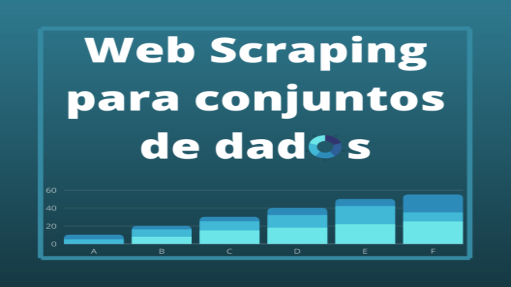
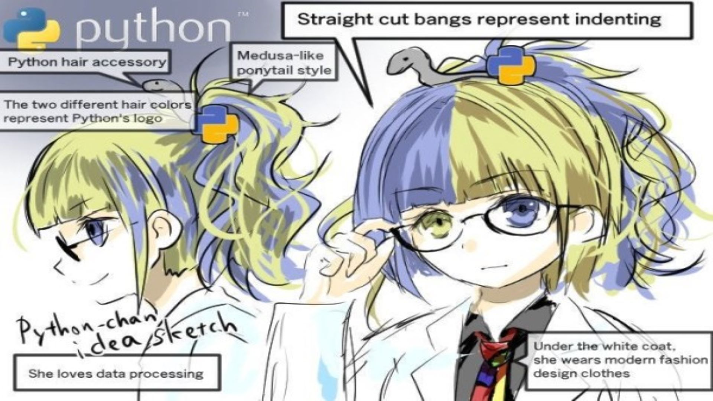
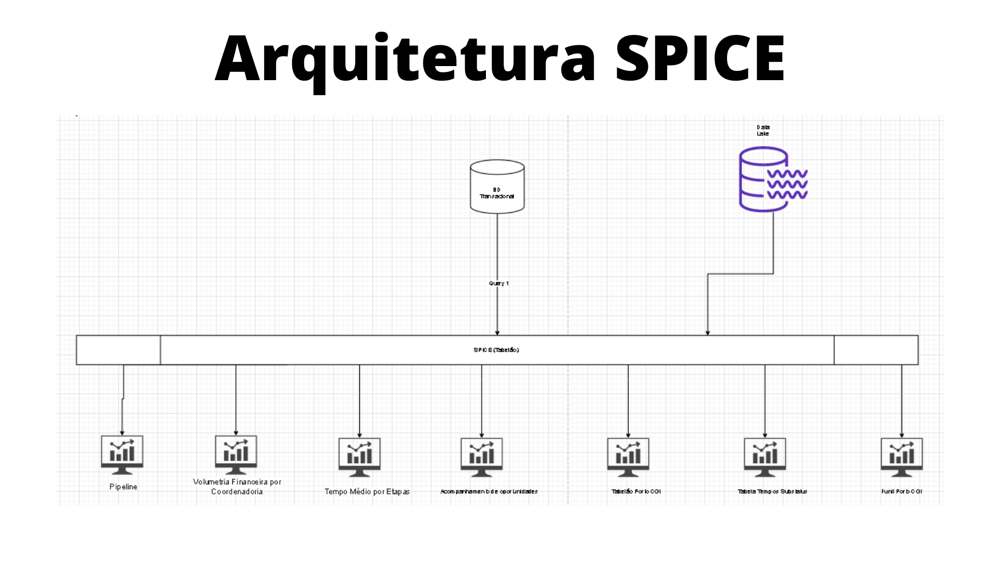

I'm an Economics undergraduate student at UFRRJ, Kaggle expert (notebooks and datasets) and Data Scientist Intern at Keycash.
I use data science and microeconomics to resolve business problem, and use statistical analysis to investigate the world.
I like to work with many areas of Economics and Data Science, but I like it most when it envolves Econometrics, Microeconomics, Time Series and Applied Machine Learning.
I love the meeting between economics and machine learning, I can see beauty in econometric models and feel the energy of mathematical formulations to model the behavior of economic agents.
Technologies and skills:
Python:
- Pandas
- Matplotlib
- Numpy
- Streamlit
- Jupyter-notebook
- Statsmodels
- Scikit-learn
Economics:
- Microeconomics
- Econometrics
- Mathematical economics
- Consumer behaviour
- Time Series
- GEMPACK
Data Science:
- Webscraping
- Data cleaning
- Feature engineering
- Exploratory data analysis
- Machine Learning
- Computer vision
- Web-apps with Streamlit
Soft skills:
- Comunication
- Creativity
- Problem solving
- Writing
- Thinking outside the box
Others:
- SQL
- Power BI
- Excel
- Airflow
- Docker
- Amazon Web Service
- Scientific Methodology
=-=-=-=-=-=-=-=-=-=-=-=-=-=-=-= PROJECTS =-=-=-=-=-=-=-=-=-=-=-=-=-=-=
---------------------------------------- Webscraping + scripts / web-apps -----------------------------------

O objetivo dessa ferramenta é facilitar o acesso às novidades no mundo da economia através dos jornais.
Ao invés de visitar um site de cada vez e procurar por notícias interessantes,
esse projeto visa reduzir o tempo gasto com essa atividade.
Foram selecionados 15 jornais, sendo nacionais 11 e 4 internacionais.
You can access it here.

O objetivo desse projeto é facilitar os estudos nas áreas de filosofia e literatura
(podendo, claro, se expandir para outras ciências humanas e sociais).
Utilizando uma técnica chamada web scraping, extrairemos as principais citações de alguns filósofos,
desse modo, podemos resumir o que um pensador dedicou seu tempo estudando e pesquisando.
You can access it here.

Dataset scraper
O objetivo desse projeto é extrair nome e link de datasets de 5 sites.
Com esse notebook, espero contribuir com a comunidade de Ciência de Dados, facilitando a busca por datasets em sites internacionais e nacionais.

O objetivo desse projeto é um notebook/script que faz uma raspagem de dados em 6 sites de emprego.
A motivação foi reduzir o tempo gasto entrando em diversos sites e procurar vaga por vagas.
Com esse notebook/script, o usuário já obtém algumas informações sobre a vaga e o link de acesso..
---------------------------------------- Exploratory data analysis ----------------------------------------------
The objective of this project is to analyze the asset behavior of some
companies that are in the race for the Covid-19 vaccine.
Uma análise exploratória de dados de 4 ativos financeiros e do IBOVESPA no ano de 2020

Esse projeto visa explorar os dados sobre acidentes fatais em SP desde 2015 até 2020,
pois um dos problemas que o Estado de São Paulo lida é o elevado número de acidentes de trânsito.
Aqui busco responder perguntas essenciais para que a sociedade possa reivindicar políticas públicas que reduzam o número de acidentes fatais,
e para que os governantes possam nos oferecer tais políticas públicas.
In this notebook, we will compare the female entrepreneurship index in
Brazil with that of other countries in South America. The countries analyzed
are those that the dataset does us allow to analyze, they are: Argentina, Bolivia, Ecuador and Peru.

O objetivo desse trabalho é mostrar como as tecnologias são capazes de auxiliar os governos a entender como funcionam suas estruturas sociais,
e ajudar a população a se previnir, tendo uma ideia de quão perigoso pode ser um determinado local.

Esse trabalho tem como objetivo examinar os aplicativos voltados para educação e produtividade,
a fim de obter informações sobre esses produtos no mercado virtual.
Assim, podemos pensar melhor sobre o futuro das tecnologias na educação e no trabalho.
Explorar o conjunto de dados como forma de obter informações sobre os atletas de determinados esporte,
comparando altura, peso e medalhas, e contextualizar com a história desses esportes.
The yellow September was created in 2014, in order to help prevent suicide through media campaigns,
so that this issue brings the population closer, in order to think about the problem. After all,
talking about this extreme act becomes more and more necessary, since the cases have been increasing in recent years.
---------------------------------------- Machine Learning ----------------------------------------
Classificar mercadorias pode dar ao produtor uma informação valiosa na hora de definir estratégias de marketing e de preços, nesse sentido,
esse trabalho visa classificar os vinhos tintos em vinhos de qualidade "boa" e "ruins" (ou superior e inferior, como preferir).

Esse trabalho tem como objetivo montar um modelo de classificação para tumores malignos e benignos, e investigar suas métricas de validação.
Desafio da empresa Mutual para desenvolver um modelo de risco de crédito (dados fictícios).

Desafio da empresa Keycash para desenvolver um modelo de precificação (dados fictícios).

Um simples sistema de recomendação de animes.
---------------------------------------- Datasets ----------------------------------------
COVID-19 biotech companies on stock exchange(2020)
The coronavirus pandemic has affected the entire world and many families have been destroyed.
The stock exchange was also affected, but vaccine companies took advantage of this moment and leveraged their profits.
Images made by Perseverance.

Almost a hundred research papers (Semantic Scholar).
Webscraping in Amazon.com
Python, Machine Learning, Artificial Intelligence, Statistics, etc.

Equips in Dungeons and Dragons Beyond
Equipments in Dungeons and Dragons Beyond site.
https://www.kaggle.com/patrickgomes/equips-in-dungeons-and-dragons-beyond

Basics stats scrapped in roll20.

Landscape images in Ghibli movies.

Weapons and legends in Brawlhalla.
---------------------------------------- Business problems solving ----------------------------------------

Desafio da empresa Captalys para o desenvolvimento de um novo produto de crédito. (APROVADO)

Arquitetura de dados SPICE para agrupamento de dados
Utilizando a arquitetura SPICE da AWS - QuickSight para o agrupamento e organização de data sources e datasets.
Current interests
Right now I'm interested in the following topics:
- Develop more ideas.
- Create an academic research group in the field of machine learning at UFRRJ
- Create an academic research group in the field of mathematical and computational economics at UFRRJ
- Open-source Econometrics modelling.
- Creating new web-applications.
- Reserach papers opportunities.
- Learning more about quantitative Economics and technologic implementation.
- Collaborating, developing and working with creative and innovative teams.
Get In Touch
Feel free to contact me:


{kind=link}
{kind=link}
{kind=link}
{kind=link}
{kind=link}
{kind=link}
{kind=link}
{kind=link}
{kind=link}
{kind=link}
{kind=link}
{kind=link}